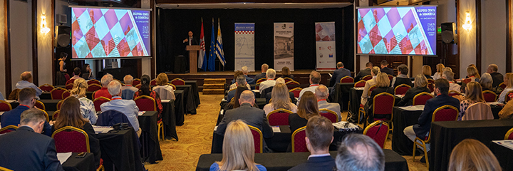

Planificación y ejecución de congresos y eventos internacionales para una experiencia fluida y exitosa.
Detallada coordinación y logística para un desarrollo sin problemas del evento.
Conducción a cargo de profesionales como locutores y presentadores para un ambiente cautivador.
Servicios de interpretación simultánea y traducción consecutiva para una comunicación efectiva en eventos multilingües.
